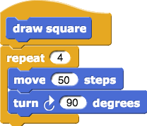
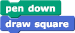
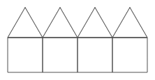
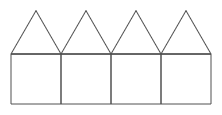

Row of Houses
So far, you've used only pre-made blocks. Now, you'll learn to build your own blocks and use them to make other blocks.
You'll start by defining a draw square block. Then,
you'll define draw triangle, then draw
house, and finally draw row of houses.
-
Click here to open a new blank project.
-
Build the
draw squareblock: right-click on the gray background of the scripting area and choose "make a block...". The video below shows how.
Right-click on Chromebooks and Macs: press or tap the touchpad with two fingers.
Chromebooks: you can also press Alt, then click with one finger.
Macs: you can also press Control (not Command!), then click with one finger.

-
Every block needs a palette (shown by the color), a title, a category (shown by the shape of the block), and a script that defines its behavior.
We recommend the following settings for your first custom block.- Palette (color):
MotionorPen. But any is OK. - Title: “draw square”.
- Category (shape): don’t change this, leave “Command” selected.
- For all sprites: don’t change this, leave “For all sprites” selected.
- Script: drag any block you want into the block editor.
- Palette (color):
-
Finish building the block, like below. When you are done, click “OK” or “Apply”.
 -
Test your
draw squareblock. Fix your code if necessary. Remember you will need thepen downblock, like below. -
Create a
draw triangleblock that draws an equilateral triangle with the same side length as the square you just drew (50). -
Create a
draw houseblock that uses yourdraw squareanddraw triangleblocks together to draw a "house" shape. You might have to do some work to get the two shapes to connect properly.
-
Build a
draw row of housesblock that draws a row of attached houses, each new one to the right of the previous, until you hit the right edge of the screen. You may wish to use the following blocks. 

-
(optional) Imagine: what else could you make with this ability? A block of ornate brownstones? The Manhattan skyline? The
pick randomblock may be useful.
Credits
Content adapted from BJC (June 2017) U1L3, BJC U1 Optional Project 2, and BJC U1L2 Gossip.